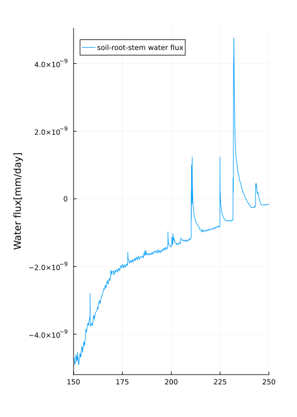

Coupling the CliMA Canopy and Soil Hydraulics Models
In the previous tutorial, we demonstrated how to run the canopy model in standalone mode using prescribed values for the inputs of soil hydraulics into the canopy hydraulics model. However, ClimaLand has the built-in capacity to couple the canopy model with a soil physics model and timestep the two simulations together to model a canopy-soil system. This tutorial demonstrates how to setup and run a coupled simulation, again using initial conditions, atmospheric and radiative flux conditions, and canopy properties observed at the US-MOz flux tower, a flux tower located within an oak-hickory forest in Ozark, Missouri, USA. See Wang et al. 2021 for details on the site and parameters.
In ClimaLand, the coupling of the canopy and soil models is done by pairing the inputs and outputs which between the two models so that they match. For example, the root extraction of the canopy hydraulics model, which acts as a boundary flux for the plant system, is paired with a source term for root extraction in the soil model, so that the flux of water from the soil into the roots is equal and factored into both models. This pairing is done automatically in the constructor for a SoilCanopyModel so that a user needs only specify the necessary arguments for each of the component models, and the two models will automatically be paired into a coupled simulation.
Preliminary Setup
Load External Packages:
import SciMLBase
using Plots
using Statistics
using Dates
using InsolationLoad CliMA Packages and ClimaLand Modules:
using ClimaCore
import ClimaParams as CP
import ClimaTimeSteppers as CTS
using ClimaLand
using ClimaLand.Domains: Column, obtain_surface_domain
using ClimaLand.Soil
using ClimaLand.Soil.Biogeochemistry
using ClimaLand.Canopy
using ClimaLand.Canopy.PlantHydraulics
import ClimaLand
import ClimaLand.Parameters as LP
using DelimitedFiles
import ClimaLand.FluxnetSimulations as FluxnetSimulationsDefine the floating point precision desired (64 or 32 bit), and get the parameter set holding constants used across CliMA Models:
const FT = Float32;
earth_param_set = LP.LandParameters(FT);First provide some information about the site
site_ID = "US-MOz""US-MOz"Timezone (offset from UTC in hrs)
time_offset = 7
start_date = DateTime(2010) + Hour(time_offset)2010-01-01T07:00:00Site latitude and longitude
lat = FT(38.7441) # degree
long = FT(-92.2000) # degree-92.2f0Height of the sensor at the site
atmos_h = FT(32) # m32.0f0Setup the domain for the model:
nelements = 10
zmin = FT(-2)
zmax = FT(0)
f_root_to_shoot = FT(3.5)
plant_ν = FT(2.46e-4)
n_stem = Int64(1)
n_leaf = Int64(1)
h_stem = FT(9)
h_leaf = FT(9.5)
compartment_midpoints = [h_stem / 2, h_stem + h_leaf / 2]
compartment_surfaces = [zmax, h_stem, h_stem + h_leaf]
land_domain =
Column(; zlim = (zmin, zmax), nelements = nelements, longlat = (long, lat));Specify the time range and dt value over which to perform the simulation.
t0 = Float64(150 * 3600 * 24)# start mid year
N_days = 100
tf = t0 + Float64(3600 * 24 * N_days)
dt = Float64(30)30.0- We will be using prescribed atmospheric and radiative drivers from the US-MOz tower, which we read in here. We are using prescribed atmospheric and radiative flux conditions, but it is also possible to couple the simulation with atmospheric and radiative flux models. We also
read in the observed LAI and let that vary in time in a prescribed manner.
Forcing data
(; atmos, radiation) = FluxnetSimulations.prescribed_forcing_fluxnet(
site_ID,
lat,
long,
time_offset,
atmos_h,
start_date,
earth_param_set,
FT,
);Setup the Coupled Canopy and Soil Physics Model
We want to simulate the canopy-soil system together, so the model type SoilCanopyModel is chosen. From the linked documentation, we see that we need to provide the soil model type and arguments as well as the canopy model component types, component arguments, and the canopy model arguments, so we first need to initialize all of these.
For our soil model, we will choose the EnergyHydrology and set up all the necessary arguments. See the tutorial on the model for a more detailed explanation of the soil model.
Define the parameters for the soil model and provide them to the model parameters struct:
Soil parameters
soil_ν = FT(0.5) # m3/m3
soil_K_sat = FT(4e-7) # m/s
soil_S_s = FT(1e-3) # 1/m
soil_vg_n = FT(2.05) # unitless
soil_vg_α = FT(0.04) # inverse meters
θ_r = FT(0.067); # m3/m3Soil heat transfer parameters
ν_ss_quartz = FT(0.1)
ν_ss_om = FT(0.1)
ν_ss_gravel = FT(0.0);
z_0m_soil = FT(0.1)
z_0b_soil = FT(0.1)
soil_ϵ = FT(0.98)
soil_α_PAR = FT(0.2)
soil_α_NIR = FT(0.4)
soil_domain = land_domain
soil_albedo = ClimaLand.Soil.ConstantTwoBandSoilAlbedo{FT}(;
PAR_albedo = soil_α_PAR,
NIR_albedo = soil_α_NIR,
)
soil_ps = Soil.EnergyHydrologyParameters(
FT;
ν = soil_ν,
ν_ss_om = ν_ss_om,
ν_ss_quartz = ν_ss_quartz,
ν_ss_gravel = ν_ss_gravel,
hydrology_cm = vanGenuchten{FT}(; α = soil_vg_α, n = soil_vg_n),
K_sat = soil_K_sat,
S_s = soil_S_s,
θ_r = θ_r,
earth_param_set = earth_param_set,
z_0m = z_0m_soil,
z_0b = z_0b_soil,
emissivity = soil_ϵ,
albedo = soil_albedo,
);
soil_args = (domain = soil_domain, parameters = soil_ps)
soil_model_type = Soil.EnergyHydrology{FT}ClimaLand.Soil.EnergyHydrology{Float32}For the heterotrophic respiration model, see the documentation to understand the parameterisation. The domain is defined similarly to the soil domain described above.
soilco2_type = Soil.Biogeochemistry.SoilCO2Model{FT}
soilco2_ps = SoilCO2ModelParameters(FT);
Csom = ClimaLand.PrescribedSoilOrganicCarbon{FT}(TimeVaryingInput((t) -> 5))
soilco2_args = (; domain = soil_domain, parameters = soilco2_ps)(domain = ClimaLand.Domains.Column{Float32, @NamedTuple{surface::ClimaCore.Spaces.PointSpace{ClimaComms.SingletonCommsContext{ClimaComms.CPUSingleThreaded}, ClimaCore.DataLayouts.DataF{ClimaCore.Geometry.LocalGeometry{(1, 2, 3), ClimaCore.Geometry.LatLongZPoint{Float32}, Float32, ClimaCore.Geometry.AxisTensor{Float32, 2, Tuple{ClimaCore.Geometry.LocalAxis{(1, 2, 3)}, ClimaCore.Geometry.CovariantAxis{(1, 2, 3)}}, StaticArraysCore.SMatrix{3, 3, Float32, 9}}, ClimaCore.Geometry.AxisTensor{Float32, 2, Tuple{ClimaCore.Geometry.ContravariantAxis{(1, 2, 3)}, ClimaCore.Geometry.LocalAxis{(1, 2, 3)}}, StaticArraysCore.SMatrix{3, 3, Float32, 9}}, ClimaCore.Geometry.AxisTensor{Float32, 2, Tuple{ClimaCore.Geometry.ContravariantAxis{(1, 2, 3)}, ClimaCore.Geometry.ContravariantAxis{(1, 2, 3)}}, StaticArraysCore.SMatrix{3, 3, Float32, 9}}, ClimaCore.Geometry.AxisTensor{Float32, 2, Tuple{ClimaCore.Geometry.CovariantAxis{(1, 2, 3)}, ClimaCore.Geometry.CovariantAxis{(1, 2, 3)}}, StaticArraysCore.SMatrix{3, 3, Float32, 9}}}, SubArray{Float32, 1, Array{Float32, 5}, Tuple{Int64, Int64, Int64, Base.Slice{Base.OneTo{Int64}}, Int64}, true}}}, subsurface::ClimaCore.Spaces.FiniteDifferenceSpace{ClimaCore.Grids.ColumnGrid{ClimaCore.Grids.ExtrudedFiniteDifferenceGrid{ClimaCore.Grids.SpectralElementGrid2D{ClimaCore.Topologies.Topology2D{ClimaComms.SingletonCommsContext{ClimaComms.CPUSingleThreaded}, ClimaCore.Meshes.RectilinearMesh{ClimaCore.Meshes.IntervalMesh{ClimaCore.Meshes.Uniform, ClimaCore.Domains.IntervalDomain{ClimaCore.Geometry.LatPoint{Float32}, Tuple{Symbol, Symbol}}, LinRange{ClimaCore.Geometry.LatPoint{Float32}, Int64}, Nothing}, ClimaCore.Meshes.IntervalMesh{ClimaCore.Meshes.Uniform, ClimaCore.Domains.IntervalDomain{ClimaCore.Geometry.LongPoint{Float32}, Tuple{Symbol, Symbol}}, LinRange{ClimaCore.Geometry.LongPoint{Float32}, Int64}, Nothing}}, CartesianIndices{2, Tuple{Base.OneTo{Int64}, Base.OneTo{Int64}}}, LinearIndices{2, Tuple{Base.OneTo{Int64}, Base.OneTo{Int64}}}, Vector{Tuple{Int64, Int64, Int64, Int64, Bool}}, Vector{Tuple{Int64, Int64, Int64, Int64, Bool}}, Vector{Tuple{Int64, Int64}}, Vector{Int64}, Vector{Tuple{Bool, Int64, Int64}}, Vector{Int64}, Vector{Int64}, @NamedTuple{north::Vector{Tuple{Int64, Int64}}, south::Vector{Tuple{Int64, Int64}}, west::Vector{Tuple{Int64, Int64}}, east::Vector{Tuple{Int64, Int64}}}, Vector{Tuple{Int64, Int64}}}, ClimaCore.Quadratures.GL{1}, ClimaCore.Geometry.CartesianGlobalGeometry, ClimaCore.DataLayouts.IJFH{ClimaCore.Geometry.LocalGeometry{(1, 2), ClimaCore.Geometry.LatLongPoint{Float32}, Float32, ClimaCore.Geometry.AxisTensor{Float32, 2, Tuple{ClimaCore.Geometry.LocalAxis{(1, 2)}, ClimaCore.Geometry.CovariantAxis{(1, 2)}}, StaticArraysCore.SMatrix{2, 2, Float32, 4}}, ClimaCore.Geometry.AxisTensor{Float32, 2, Tuple{ClimaCore.Geometry.ContravariantAxis{(1, 2)}, ClimaCore.Geometry.LocalAxis{(1, 2)}}, StaticArraysCore.SMatrix{2, 2, Float32, 4}}, ClimaCore.Geometry.AxisTensor{Float32, 2, Tuple{ClimaCore.Geometry.ContravariantAxis{(1, 2)}, ClimaCore.Geometry.ContravariantAxis{(1, 2)}}, StaticArraysCore.SMatrix{2, 2, Float32, 4}}, ClimaCore.Geometry.AxisTensor{Float32, 2, Tuple{ClimaCore.Geometry.CovariantAxis{(1, 2)}, ClimaCore.Geometry.CovariantAxis{(1, 2)}}, StaticArraysCore.SMatrix{2, 2, Float32, 4}}}, 1, Array{Float32, 4}}, Nothing, Nothing, Nothing, ClimaCore.DataLayouts.IJHMask{ClimaCore.DataLayouts.IJFH{Bool, 1, Array{Bool, 4}}, Vector{Int64}, Vector{Int64}}}, ClimaCore.Grids.FiniteDifferenceGrid{ClimaCore.Topologies.IntervalTopology{ClimaComms.SingletonCommsContext{ClimaComms.CPUSingleThreaded}, ClimaCore.Meshes.IntervalMesh{ClimaCore.Meshes.Uniform, ClimaCore.Domains.IntervalDomain{ClimaCore.Geometry.ZPoint{Float32}, Tuple{Symbol, Symbol}}, LinRange{ClimaCore.Geometry.ZPoint{Float32}, Int64}, Nothing}, @NamedTuple{bottom::Int64, top::Int64}}, ClimaCore.Geometry.CartesianGlobalGeometry, ClimaCore.DataLayouts.VF{ClimaCore.Geometry.LocalGeometry{(3,), ClimaCore.Geometry.ZPoint{Float32}, Float32, ClimaCore.Geometry.AxisTensor{Float32, 2, Tuple{ClimaCore.Geometry.LocalAxis{(3,)}, ClimaCore.Geometry.CovariantAxis{(3,)}}, StaticArraysCore.SMatrix{1, 1, Float32, 1}}, ClimaCore.Geometry.AxisTensor{Float32, 2, Tuple{ClimaCore.Geometry.ContravariantAxis{(3,)}, ClimaCore.Geometry.LocalAxis{(3,)}}, StaticArraysCore.SMatrix{1, 1, Float32, 1}}, ClimaCore.Geometry.AxisTensor{Float32, 2, Tuple{ClimaCore.Geometry.ContravariantAxis{(3,)}, ClimaCore.Geometry.ContravariantAxis{(3,)}}, StaticArraysCore.SMatrix{1, 1, Float32, 1}}, ClimaCore.Geometry.AxisTensor{Float32, 2, Tuple{ClimaCore.Geometry.CovariantAxis{(3,)}, ClimaCore.Geometry.CovariantAxis{(3,)}}, StaticArraysCore.SMatrix{1, 1, Float32, 1}}}, 10, Matrix{Float32}}, ClimaCore.DataLayouts.VF{ClimaCore.Geometry.LocalGeometry{(3,), ClimaCore.Geometry.ZPoint{Float32}, Float32, ClimaCore.Geometry.AxisTensor{Float32, 2, Tuple{ClimaCore.Geometry.LocalAxis{(3,)}, ClimaCore.Geometry.CovariantAxis{(3,)}}, StaticArraysCore.SMatrix{1, 1, Float32, 1}}, ClimaCore.Geometry.AxisTensor{Float32, 2, Tuple{ClimaCore.Geometry.ContravariantAxis{(3,)}, ClimaCore.Geometry.LocalAxis{(3,)}}, StaticArraysCore.SMatrix{1, 1, Float32, 1}}, ClimaCore.Geometry.AxisTensor{Float32, 2, Tuple{ClimaCore.Geometry.ContravariantAxis{(3,)}, ClimaCore.Geometry.ContravariantAxis{(3,)}}, StaticArraysCore.SMatrix{1, 1, Float32, 1}}, ClimaCore.Geometry.AxisTensor{Float32, 2, Tuple{ClimaCore.Geometry.CovariantAxis{(3,)}, ClimaCore.Geometry.CovariantAxis{(3,)}}, StaticArraysCore.SMatrix{1, 1, Float32, 1}}}, 11, Matrix{Float32}}}, ClimaCore.Grids.Flat, ClimaCore.Geometry.CartesianGlobalGeometry, ClimaCore.DataLayouts.VIJFH{ClimaCore.Geometry.LocalGeometry{(1, 2, 3), ClimaCore.Geometry.LatLongZPoint{Float32}, Float32, ClimaCore.Geometry.AxisTensor{Float32, 2, Tuple{ClimaCore.Geometry.LocalAxis{(1, 2, 3)}, ClimaCore.Geometry.CovariantAxis{(1, 2, 3)}}, StaticArraysCore.SMatrix{3, 3, Float32, 9}}, ClimaCore.Geometry.AxisTensor{Float32, 2, Tuple{ClimaCore.Geometry.ContravariantAxis{(1, 2, 3)}, ClimaCore.Geometry.LocalAxis{(1, 2, 3)}}, StaticArraysCore.SMatrix{3, 3, Float32, 9}}, ClimaCore.Geometry.AxisTensor{Float32, 2, Tuple{ClimaCore.Geometry.ContravariantAxis{(1, 2, 3)}, ClimaCore.Geometry.ContravariantAxis{(1, 2, 3)}}, StaticArraysCore.SMatrix{3, 3, Float32, 9}}, ClimaCore.Geometry.AxisTensor{Float32, 2, Tuple{ClimaCore.Geometry.CovariantAxis{(1, 2, 3)}, ClimaCore.Geometry.CovariantAxis{(1, 2, 3)}}, StaticArraysCore.SMatrix{3, 3, Float32, 9}}}, 10, 1, Array{Float32, 5}}, ClimaCore.DataLayouts.VIJFH{ClimaCore.Geometry.LocalGeometry{(1, 2, 3), ClimaCore.Geometry.LatLongZPoint{Float32}, Float32, ClimaCore.Geometry.AxisTensor{Float32, 2, Tuple{ClimaCore.Geometry.LocalAxis{(1, 2, 3)}, ClimaCore.Geometry.CovariantAxis{(1, 2, 3)}}, StaticArraysCore.SMatrix{3, 3, Float32, 9}}, ClimaCore.Geometry.AxisTensor{Float32, 2, Tuple{ClimaCore.Geometry.ContravariantAxis{(1, 2, 3)}, ClimaCore.Geometry.LocalAxis{(1, 2, 3)}}, StaticArraysCore.SMatrix{3, 3, Float32, 9}}, ClimaCore.Geometry.AxisTensor{Float32, 2, Tuple{ClimaCore.Geometry.ContravariantAxis{(1, 2, 3)}, ClimaCore.Geometry.ContravariantAxis{(1, 2, 3)}}, StaticArraysCore.SMatrix{3, 3, Float32, 9}}, ClimaCore.Geometry.AxisTensor{Float32, 2, Tuple{ClimaCore.Geometry.CovariantAxis{(1, 2, 3)}, ClimaCore.Geometry.CovariantAxis{(1, 2, 3)}}, StaticArraysCore.SMatrix{3, 3, Float32, 9}}}, 11, 1, Array{Float32, 5}}}, ClimaCore.Grids.ColumnIndex{2}}, ClimaCore.Grids.CellCenter}, subsurface_face::ClimaCore.Spaces.FiniteDifferenceSpace{ClimaCore.Grids.ColumnGrid{ClimaCore.Grids.ExtrudedFiniteDifferenceGrid{ClimaCore.Grids.SpectralElementGrid2D{ClimaCore.Topologies.Topology2D{ClimaComms.SingletonCommsContext{ClimaComms.CPUSingleThreaded}, ClimaCore.Meshes.RectilinearMesh{ClimaCore.Meshes.IntervalMesh{ClimaCore.Meshes.Uniform, ClimaCore.Domains.IntervalDomain{ClimaCore.Geometry.LatPoint{Float32}, Tuple{Symbol, Symbol}}, LinRange{ClimaCore.Geometry.LatPoint{Float32}, Int64}, Nothing}, ClimaCore.Meshes.IntervalMesh{ClimaCore.Meshes.Uniform, ClimaCore.Domains.IntervalDomain{ClimaCore.Geometry.LongPoint{Float32}, Tuple{Symbol, Symbol}}, LinRange{ClimaCore.Geometry.LongPoint{Float32}, Int64}, Nothing}}, CartesianIndices{2, Tuple{Base.OneTo{Int64}, Base.OneTo{Int64}}}, LinearIndices{2, Tuple{Base.OneTo{Int64}, Base.OneTo{Int64}}}, Vector{Tuple{Int64, Int64, Int64, Int64, Bool}}, Vector{Tuple{Int64, Int64, Int64, Int64, Bool}}, Vector{Tuple{Int64, Int64}}, Vector{Int64}, Vector{Tuple{Bool, Int64, Int64}}, Vector{Int64}, Vector{Int64}, @NamedTuple{north::Vector{Tuple{Int64, Int64}}, south::Vector{Tuple{Int64, Int64}}, west::Vector{Tuple{Int64, Int64}}, east::Vector{Tuple{Int64, Int64}}}, Vector{Tuple{Int64, Int64}}}, ClimaCore.Quadratures.GL{1}, ClimaCore.Geometry.CartesianGlobalGeometry, ClimaCore.DataLayouts.IJFH{ClimaCore.Geometry.LocalGeometry{(1, 2), ClimaCore.Geometry.LatLongPoint{Float32}, Float32, ClimaCore.Geometry.AxisTensor{Float32, 2, Tuple{ClimaCore.Geometry.LocalAxis{(1, 2)}, ClimaCore.Geometry.CovariantAxis{(1, 2)}}, StaticArraysCore.SMatrix{2, 2, Float32, 4}}, ClimaCore.Geometry.AxisTensor{Float32, 2, Tuple{ClimaCore.Geometry.ContravariantAxis{(1, 2)}, ClimaCore.Geometry.LocalAxis{(1, 2)}}, StaticArraysCore.SMatrix{2, 2, Float32, 4}}, ClimaCore.Geometry.AxisTensor{Float32, 2, Tuple{ClimaCore.Geometry.ContravariantAxis{(1, 2)}, ClimaCore.Geometry.ContravariantAxis{(1, 2)}}, StaticArraysCore.SMatrix{2, 2, Float32, 4}}, ClimaCore.Geometry.AxisTensor{Float32, 2, Tuple{ClimaCore.Geometry.CovariantAxis{(1, 2)}, ClimaCore.Geometry.CovariantAxis{(1, 2)}}, StaticArraysCore.SMatrix{2, 2, Float32, 4}}}, 1, Array{Float32, 4}}, Nothing, Nothing, Nothing, ClimaCore.DataLayouts.IJHMask{ClimaCore.DataLayouts.IJFH{Bool, 1, Array{Bool, 4}}, Vector{Int64}, Vector{Int64}}}, ClimaCore.Grids.FiniteDifferenceGrid{ClimaCore.Topologies.IntervalTopology{ClimaComms.SingletonCommsContext{ClimaComms.CPUSingleThreaded}, ClimaCore.Meshes.IntervalMesh{ClimaCore.Meshes.Uniform, ClimaCore.Domains.IntervalDomain{ClimaCore.Geometry.ZPoint{Float32}, Tuple{Symbol, Symbol}}, LinRange{ClimaCore.Geometry.ZPoint{Float32}, Int64}, Nothing}, @NamedTuple{bottom::Int64, top::Int64}}, ClimaCore.Geometry.CartesianGlobalGeometry, ClimaCore.DataLayouts.VF{ClimaCore.Geometry.LocalGeometry{(3,), ClimaCore.Geometry.ZPoint{Float32}, Float32, ClimaCore.Geometry.AxisTensor{Float32, 2, Tuple{ClimaCore.Geometry.LocalAxis{(3,)}, ClimaCore.Geometry.CovariantAxis{(3,)}}, StaticArraysCore.SMatrix{1, 1, Float32, 1}}, ClimaCore.Geometry.AxisTensor{Float32, 2, Tuple{ClimaCore.Geometry.ContravariantAxis{(3,)}, ClimaCore.Geometry.LocalAxis{(3,)}}, StaticArraysCore.SMatrix{1, 1, Float32, 1}}, ClimaCore.Geometry.AxisTensor{Float32, 2, Tuple{ClimaCore.Geometry.ContravariantAxis{(3,)}, ClimaCore.Geometry.ContravariantAxis{(3,)}}, StaticArraysCore.SMatrix{1, 1, Float32, 1}}, ClimaCore.Geometry.AxisTensor{Float32, 2, Tuple{ClimaCore.Geometry.CovariantAxis{(3,)}, ClimaCore.Geometry.CovariantAxis{(3,)}}, StaticArraysCore.SMatrix{1, 1, Float32, 1}}}, 10, Matrix{Float32}}, ClimaCore.DataLayouts.VF{ClimaCore.Geometry.LocalGeometry{(3,), ClimaCore.Geometry.ZPoint{Float32}, Float32, ClimaCore.Geometry.AxisTensor{Float32, 2, Tuple{ClimaCore.Geometry.LocalAxis{(3,)}, ClimaCore.Geometry.CovariantAxis{(3,)}}, StaticArraysCore.SMatrix{1, 1, Float32, 1}}, ClimaCore.Geometry.AxisTensor{Float32, 2, Tuple{ClimaCore.Geometry.ContravariantAxis{(3,)}, ClimaCore.Geometry.LocalAxis{(3,)}}, StaticArraysCore.SMatrix{1, 1, Float32, 1}}, ClimaCore.Geometry.AxisTensor{Float32, 2, Tuple{ClimaCore.Geometry.ContravariantAxis{(3,)}, ClimaCore.Geometry.ContravariantAxis{(3,)}}, StaticArraysCore.SMatrix{1, 1, Float32, 1}}, ClimaCore.Geometry.AxisTensor{Float32, 2, Tuple{ClimaCore.Geometry.CovariantAxis{(3,)}, ClimaCore.Geometry.CovariantAxis{(3,)}}, StaticArraysCore.SMatrix{1, 1, Float32, 1}}}, 11, Matrix{Float32}}}, ClimaCore.Grids.Flat, ClimaCore.Geometry.CartesianGlobalGeometry, ClimaCore.DataLayouts.VIJFH{ClimaCore.Geometry.LocalGeometry{(1, 2, 3), ClimaCore.Geometry.LatLongZPoint{Float32}, Float32, ClimaCore.Geometry.AxisTensor{Float32, 2, Tuple{ClimaCore.Geometry.LocalAxis{(1, 2, 3)}, ClimaCore.Geometry.CovariantAxis{(1, 2, 3)}}, StaticArraysCore.SMatrix{3, 3, Float32, 9}}, ClimaCore.Geometry.AxisTensor{Float32, 2, Tuple{ClimaCore.Geometry.ContravariantAxis{(1, 2, 3)}, ClimaCore.Geometry.LocalAxis{(1, 2, 3)}}, StaticArraysCore.SMatrix{3, 3, Float32, 9}}, ClimaCore.Geometry.AxisTensor{Float32, 2, Tuple{ClimaCore.Geometry.ContravariantAxis{(1, 2, 3)}, ClimaCore.Geometry.ContravariantAxis{(1, 2, 3)}}, StaticArraysCore.SMatrix{3, 3, Float32, 9}}, ClimaCore.Geometry.AxisTensor{Float32, 2, Tuple{ClimaCore.Geometry.CovariantAxis{(1, 2, 3)}, ClimaCore.Geometry.CovariantAxis{(1, 2, 3)}}, StaticArraysCore.SMatrix{3, 3, Float32, 9}}}, 10, 1, Array{Float32, 5}}, ClimaCore.DataLayouts.VIJFH{ClimaCore.Geometry.LocalGeometry{(1, 2, 3), ClimaCore.Geometry.LatLongZPoint{Float32}, Float32, ClimaCore.Geometry.AxisTensor{Float32, 2, Tuple{ClimaCore.Geometry.LocalAxis{(1, 2, 3)}, ClimaCore.Geometry.CovariantAxis{(1, 2, 3)}}, StaticArraysCore.SMatrix{3, 3, Float32, 9}}, ClimaCore.Geometry.AxisTensor{Float32, 2, Tuple{ClimaCore.Geometry.ContravariantAxis{(1, 2, 3)}, ClimaCore.Geometry.LocalAxis{(1, 2, 3)}}, StaticArraysCore.SMatrix{3, 3, Float32, 9}}, ClimaCore.Geometry.AxisTensor{Float32, 2, Tuple{ClimaCore.Geometry.ContravariantAxis{(1, 2, 3)}, ClimaCore.Geometry.ContravariantAxis{(1, 2, 3)}}, StaticArraysCore.SMatrix{3, 3, Float32, 9}}, ClimaCore.Geometry.AxisTensor{Float32, 2, Tuple{ClimaCore.Geometry.CovariantAxis{(1, 2, 3)}, ClimaCore.Geometry.CovariantAxis{(1, 2, 3)}}, StaticArraysCore.SMatrix{3, 3, Float32, 9}}}, 11, 1, Array{Float32, 5}}}, ClimaCore.Grids.ColumnIndex{2}}, ClimaCore.Grids.CellFace}}, @NamedTuple{z::ClimaCore.Fields.Field{ClimaCore.DataLayouts.VF{Float32, 10, SubArray{Float32, 2, Array{Float32, 5}, Tuple{Base.Slice{Base.OneTo{Int64}}, Int64, Int64, UnitRange{Int64}, Int64}, false}}, ClimaCore.Spaces.FiniteDifferenceSpace{ClimaCore.Grids.ColumnGrid{ClimaCore.Grids.ExtrudedFiniteDifferenceGrid{ClimaCore.Grids.SpectralElementGrid2D{ClimaCore.Topologies.Topology2D{ClimaComms.SingletonCommsContext{ClimaComms.CPUSingleThreaded}, ClimaCore.Meshes.RectilinearMesh{ClimaCore.Meshes.IntervalMesh{ClimaCore.Meshes.Uniform, ClimaCore.Domains.IntervalDomain{ClimaCore.Geometry.LatPoint{Float32}, Tuple{Symbol, Symbol}}, LinRange{ClimaCore.Geometry.LatPoint{Float32}, Int64}, Nothing}, ClimaCore.Meshes.IntervalMesh{ClimaCore.Meshes.Uniform, ClimaCore.Domains.IntervalDomain{ClimaCore.Geometry.LongPoint{Float32}, Tuple{Symbol, Symbol}}, LinRange{ClimaCore.Geometry.LongPoint{Float32}, Int64}, Nothing}}, CartesianIndices{2, Tuple{Base.OneTo{Int64}, Base.OneTo{Int64}}}, LinearIndices{2, Tuple{Base.OneTo{Int64}, Base.OneTo{Int64}}}, Vector{Tuple{Int64, Int64, Int64, Int64, Bool}}, Vector{Tuple{Int64, Int64, Int64, Int64, Bool}}, Vector{Tuple{Int64, Int64}}, Vector{Int64}, Vector{Tuple{Bool, Int64, Int64}}, Vector{Int64}, Vector{Int64}, @NamedTuple{north::Vector{Tuple{Int64, Int64}}, south::Vector{Tuple{Int64, Int64}}, west::Vector{Tuple{Int64, Int64}}, east::Vector{Tuple{Int64, Int64}}}, Vector{Tuple{Int64, Int64}}}, ClimaCore.Quadratures.GL{1}, ClimaCore.Geometry.CartesianGlobalGeometry, ClimaCore.DataLayouts.IJFH{ClimaCore.Geometry.LocalGeometry{(1, 2), ClimaCore.Geometry.LatLongPoint{Float32}, Float32, ClimaCore.Geometry.AxisTensor{Float32, 2, Tuple{ClimaCore.Geometry.LocalAxis{(1, 2)}, ClimaCore.Geometry.CovariantAxis{(1, 2)}}, StaticArraysCore.SMatrix{2, 2, Float32, 4}}, ClimaCore.Geometry.AxisTensor{Float32, 2, Tuple{ClimaCore.Geometry.ContravariantAxis{(1, 2)}, ClimaCore.Geometry.LocalAxis{(1, 2)}}, StaticArraysCore.SMatrix{2, 2, Float32, 4}}, ClimaCore.Geometry.AxisTensor{Float32, 2, Tuple{ClimaCore.Geometry.ContravariantAxis{(1, 2)}, ClimaCore.Geometry.ContravariantAxis{(1, 2)}}, StaticArraysCore.SMatrix{2, 2, Float32, 4}}, ClimaCore.Geometry.AxisTensor{Float32, 2, Tuple{ClimaCore.Geometry.CovariantAxis{(1, 2)}, ClimaCore.Geometry.CovariantAxis{(1, 2)}}, StaticArraysCore.SMatrix{2, 2, Float32, 4}}}, 1, Array{Float32, 4}}, Nothing, Nothing, Nothing, ClimaCore.DataLayouts.IJHMask{ClimaCore.DataLayouts.IJFH{Bool, 1, Array{Bool, 4}}, Vector{Int64}, Vector{Int64}}}, ClimaCore.Grids.FiniteDifferenceGrid{ClimaCore.Topologies.IntervalTopology{ClimaComms.SingletonCommsContext{ClimaComms.CPUSingleThreaded}, ClimaCore.Meshes.IntervalMesh{ClimaCore.Meshes.Uniform, ClimaCore.Domains.IntervalDomain{ClimaCore.Geometry.ZPoint{Float32}, Tuple{Symbol, Symbol}}, LinRange{ClimaCore.Geometry.ZPoint{Float32}, Int64}, Nothing}, @NamedTuple{bottom::Int64, top::Int64}}, ClimaCore.Geometry.CartesianGlobalGeometry, ClimaCore.DataLayouts.VF{ClimaCore.Geometry.LocalGeometry{(3,), ClimaCore.Geometry.ZPoint{Float32}, Float32, ClimaCore.Geometry.AxisTensor{Float32, 2, Tuple{ClimaCore.Geometry.LocalAxis{(3,)}, ClimaCore.Geometry.CovariantAxis{(3,)}}, StaticArraysCore.SMatrix{1, 1, Float32, 1}}, ClimaCore.Geometry.AxisTensor{Float32, 2, Tuple{ClimaCore.Geometry.ContravariantAxis{(3,)}, ClimaCore.Geometry.LocalAxis{(3,)}}, StaticArraysCore.SMatrix{1, 1, Float32, 1}}, ClimaCore.Geometry.AxisTensor{Float32, 2, Tuple{ClimaCore.Geometry.ContravariantAxis{(3,)}, ClimaCore.Geometry.ContravariantAxis{(3,)}}, StaticArraysCore.SMatrix{1, 1, Float32, 1}}, ClimaCore.Geometry.AxisTensor{Float32, 2, Tuple{ClimaCore.Geometry.CovariantAxis{(3,)}, ClimaCore.Geometry.CovariantAxis{(3,)}}, StaticArraysCore.SMatrix{1, 1, Float32, 1}}}, 10, Matrix{Float32}}, ClimaCore.DataLayouts.VF{ClimaCore.Geometry.LocalGeometry{(3,), ClimaCore.Geometry.ZPoint{Float32}, Float32, ClimaCore.Geometry.AxisTensor{Float32, 2, Tuple{ClimaCore.Geometry.LocalAxis{(3,)}, ClimaCore.Geometry.CovariantAxis{(3,)}}, StaticArraysCore.SMatrix{1, 1, Float32, 1}}, ClimaCore.Geometry.AxisTensor{Float32, 2, Tuple{ClimaCore.Geometry.ContravariantAxis{(3,)}, ClimaCore.Geometry.LocalAxis{(3,)}}, StaticArraysCore.SMatrix{1, 1, Float32, 1}}, ClimaCore.Geometry.AxisTensor{Float32, 2, Tuple{ClimaCore.Geometry.ContravariantAxis{(3,)}, ClimaCore.Geometry.ContravariantAxis{(3,)}}, StaticArraysCore.SMatrix{1, 1, Float32, 1}}, ClimaCore.Geometry.AxisTensor{Float32, 2, Tuple{ClimaCore.Geometry.CovariantAxis{(3,)}, ClimaCore.Geometry.CovariantAxis{(3,)}}, StaticArraysCore.SMatrix{1, 1, Float32, 1}}}, 11, Matrix{Float32}}}, ClimaCore.Grids.Flat, ClimaCore.Geometry.CartesianGlobalGeometry, ClimaCore.DataLayouts.VIJFH{ClimaCore.Geometry.LocalGeometry{(1, 2, 3), ClimaCore.Geometry.LatLongZPoint{Float32}, Float32, ClimaCore.Geometry.AxisTensor{Float32, 2, Tuple{ClimaCore.Geometry.LocalAxis{(1, 2, 3)}, ClimaCore.Geometry.CovariantAxis{(1, 2, 3)}}, StaticArraysCore.SMatrix{3, 3, Float32, 9}}, ClimaCore.Geometry.AxisTensor{Float32, 2, Tuple{ClimaCore.Geometry.ContravariantAxis{(1, 2, 3)}, ClimaCore.Geometry.LocalAxis{(1, 2, 3)}}, StaticArraysCore.SMatrix{3, 3, Float32, 9}}, ClimaCore.Geometry.AxisTensor{Float32, 2, Tuple{ClimaCore.Geometry.ContravariantAxis{(1, 2, 3)}, ClimaCore.Geometry.ContravariantAxis{(1, 2, 3)}}, StaticArraysCore.SMatrix{3, 3, Float32, 9}}, ClimaCore.Geometry.AxisTensor{Float32, 2, Tuple{ClimaCore.Geometry.CovariantAxis{(1, 2, 3)}, ClimaCore.Geometry.CovariantAxis{(1, 2, 3)}}, StaticArraysCore.SMatrix{3, 3, Float32, 9}}}, 10, 1, Array{Float32, 5}}, ClimaCore.DataLayouts.VIJFH{ClimaCore.Geometry.LocalGeometry{(1, 2, 3), ClimaCore.Geometry.LatLongZPoint{Float32}, Float32, ClimaCore.Geometry.AxisTensor{Float32, 2, Tuple{ClimaCore.Geometry.LocalAxis{(1, 2, 3)}, ClimaCore.Geometry.CovariantAxis{(1, 2, 3)}}, StaticArraysCore.SMatrix{3, 3, Float32, 9}}, ClimaCore.Geometry.AxisTensor{Float32, 2, Tuple{ClimaCore.Geometry.ContravariantAxis{(1, 2, 3)}, ClimaCore.Geometry.LocalAxis{(1, 2, 3)}}, StaticArraysCore.SMatrix{3, 3, Float32, 9}}, ClimaCore.Geometry.AxisTensor{Float32, 2, Tuple{ClimaCore.Geometry.ContravariantAxis{(1, 2, 3)}, ClimaCore.Geometry.ContravariantAxis{(1, 2, 3)}}, StaticArraysCore.SMatrix{3, 3, Float32, 9}}, ClimaCore.Geometry.AxisTensor{Float32, 2, Tuple{ClimaCore.Geometry.CovariantAxis{(1, 2, 3)}, ClimaCore.Geometry.CovariantAxis{(1, 2, 3)}}, StaticArraysCore.SMatrix{3, 3, Float32, 9}}}, 11, 1, Array{Float32, 5}}}, ClimaCore.Grids.ColumnIndex{2}}, ClimaCore.Grids.CellCenter}}, Δz_top::ClimaCore.Fields.Field{ClimaCore.DataLayouts.DataF{Float32, Vector{Float32}}, ClimaCore.Spaces.PointSpace{ClimaComms.SingletonCommsContext{ClimaComms.CPUSingleThreaded}, ClimaCore.DataLayouts.DataF{ClimaCore.Geometry.LocalGeometry{(1, 2, 3), ClimaCore.Geometry.LatLongZPoint{Float32}, Float32, ClimaCore.Geometry.AxisTensor{Float32, 2, Tuple{ClimaCore.Geometry.LocalAxis{(1, 2, 3)}, ClimaCore.Geometry.CovariantAxis{(1, 2, 3)}}, StaticArraysCore.SMatrix{3, 3, Float32, 9}}, ClimaCore.Geometry.AxisTensor{Float32, 2, Tuple{ClimaCore.Geometry.ContravariantAxis{(1, 2, 3)}, ClimaCore.Geometry.LocalAxis{(1, 2, 3)}}, StaticArraysCore.SMatrix{3, 3, Float32, 9}}, ClimaCore.Geometry.AxisTensor{Float32, 2, Tuple{ClimaCore.Geometry.ContravariantAxis{(1, 2, 3)}, ClimaCore.Geometry.ContravariantAxis{(1, 2, 3)}}, StaticArraysCore.SMatrix{3, 3, Float32, 9}}, ClimaCore.Geometry.AxisTensor{Float32, 2, Tuple{ClimaCore.Geometry.CovariantAxis{(1, 2, 3)}, ClimaCore.Geometry.CovariantAxis{(1, 2, 3)}}, StaticArraysCore.SMatrix{3, 3, Float32, 9}}}, SubArray{Float32, 1, Array{Float32, 5}, Tuple{Int64, Int64, Int64, Base.Slice{Base.OneTo{Int64}}, Int64}, true}}}}, Δz_bottom::ClimaCore.Fields.Field{ClimaCore.DataLayouts.DataF{Float32, Vector{Float32}}, ClimaCore.Spaces.PointSpace{ClimaComms.SingletonCommsContext{ClimaComms.CPUSingleThreaded}, ClimaCore.DataLayouts.DataF{ClimaCore.Geometry.LocalGeometry{(1, 2, 3), ClimaCore.Geometry.LatLongZPoint{Float32}, Float32, ClimaCore.Geometry.AxisTensor{Float32, 2, Tuple{ClimaCore.Geometry.LocalAxis{(1, 2, 3)}, ClimaCore.Geometry.CovariantAxis{(1, 2, 3)}}, StaticArraysCore.SMatrix{3, 3, Float32, 9}}, ClimaCore.Geometry.AxisTensor{Float32, 2, Tuple{ClimaCore.Geometry.ContravariantAxis{(1, 2, 3)}, ClimaCore.Geometry.LocalAxis{(1, 2, 3)}}, StaticArraysCore.SMatrix{3, 3, Float32, 9}}, ClimaCore.Geometry.AxisTensor{Float32, 2, Tuple{ClimaCore.Geometry.ContravariantAxis{(1, 2, 3)}, ClimaCore.Geometry.ContravariantAxis{(1, 2, 3)}}, StaticArraysCore.SMatrix{3, 3, Float32, 9}}, ClimaCore.Geometry.AxisTensor{Float32, 2, Tuple{ClimaCore.Geometry.CovariantAxis{(1, 2, 3)}, ClimaCore.Geometry.CovariantAxis{(1, 2, 3)}}, StaticArraysCore.SMatrix{3, 3, Float32, 9}}}, SubArray{Float32, 1, Array{Float32, 5}, Tuple{Int64, Int64, Int64, Base.Slice{Base.OneTo{Int64}}, Int64}, true}}}}, z_sfc::ClimaCore.Fields.Field{ClimaCore.DataLayouts.DataF{Float32, SubArray{Float32, 1, Array{Float32, 5}, Tuple{Int64, Int64, Int64, UnitRange{Int64}, Int64}, true}}, ClimaCore.Spaces.PointSpace{ClimaComms.SingletonCommsContext{ClimaComms.CPUSingleThreaded}, ClimaCore.DataLayouts.DataF{ClimaCore.Geometry.LocalGeometry{(1, 2, 3), ClimaCore.Geometry.LatLongZPoint{Float32}, Float32, ClimaCore.Geometry.AxisTensor{Float32, 2, Tuple{ClimaCore.Geometry.LocalAxis{(1, 2, 3)}, ClimaCore.Geometry.CovariantAxis{(1, 2, 3)}}, StaticArraysCore.SMatrix{3, 3, Float32, 9}}, ClimaCore.Geometry.AxisTensor{Float32, 2, Tuple{ClimaCore.Geometry.ContravariantAxis{(1, 2, 3)}, ClimaCore.Geometry.LocalAxis{(1, 2, 3)}}, StaticArraysCore.SMatrix{3, 3, Float32, 9}}, ClimaCore.Geometry.AxisTensor{Float32, 2, Tuple{ClimaCore.Geometry.ContravariantAxis{(1, 2, 3)}, ClimaCore.Geometry.ContravariantAxis{(1, 2, 3)}}, StaticArraysCore.SMatrix{3, 3, Float32, 9}}, ClimaCore.Geometry.AxisTensor{Float32, 2, Tuple{ClimaCore.Geometry.CovariantAxis{(1, 2, 3)}, ClimaCore.Geometry.CovariantAxis{(1, 2, 3)}}, StaticArraysCore.SMatrix{3, 3, Float32, 9}}}, SubArray{Float32, 1, Array{Float32, 5}, Tuple{Int64, Int64, Int64, Base.Slice{Base.OneTo{Int64}}, Int64}, true}}}}, depth::Float32, Δz::ClimaCore.Fields.Field{ClimaCore.DataLayouts.VF{Float32, 10, SubArray{Float32, 2, Array{Float32, 5}, Tuple{Base.Slice{Base.OneTo{Int64}}, Int64, Int64, UnitRange{Int64}, Int64}, false}}, ClimaCore.Spaces.FiniteDifferenceSpace{ClimaCore.Grids.ColumnGrid{ClimaCore.Grids.ExtrudedFiniteDifferenceGrid{ClimaCore.Grids.SpectralElementGrid2D{ClimaCore.Topologies.Topology2D{ClimaComms.SingletonCommsContext{ClimaComms.CPUSingleThreaded}, ClimaCore.Meshes.RectilinearMesh{ClimaCore.Meshes.IntervalMesh{ClimaCore.Meshes.Uniform, ClimaCore.Domains.IntervalDomain{ClimaCore.Geometry.LatPoint{Float32}, Tuple{Symbol, Symbol}}, LinRange{ClimaCore.Geometry.LatPoint{Float32}, Int64}, Nothing}, ClimaCore.Meshes.IntervalMesh{ClimaCore.Meshes.Uniform, ClimaCore.Domains.IntervalDomain{ClimaCore.Geometry.LongPoint{Float32}, Tuple{Symbol, Symbol}}, LinRange{ClimaCore.Geometry.LongPoint{Float32}, Int64}, Nothing}}, CartesianIndices{2, Tuple{Base.OneTo{Int64}, Base.OneTo{Int64}}}, LinearIndices{2, Tuple{Base.OneTo{Int64}, Base.OneTo{Int64}}}, Vector{Tuple{Int64, Int64, Int64, Int64, Bool}}, Vector{Tuple{Int64, Int64, Int64, Int64, Bool}}, Vector{Tuple{Int64, Int64}}, Vector{Int64}, Vector{Tuple{Bool, Int64, Int64}}, Vector{Int64}, Vector{Int64}, @NamedTuple{north::Vector{Tuple{Int64, Int64}}, south::Vector{Tuple{Int64, Int64}}, west::Vector{Tuple{Int64, Int64}}, east::Vector{Tuple{Int64, Int64}}}, Vector{Tuple{Int64, Int64}}}, ClimaCore.Quadratures.GL{1}, ClimaCore.Geometry.CartesianGlobalGeometry, ClimaCore.DataLayouts.IJFH{ClimaCore.Geometry.LocalGeometry{(1, 2), ClimaCore.Geometry.LatLongPoint{Float32}, Float32, ClimaCore.Geometry.AxisTensor{Float32, 2, Tuple{ClimaCore.Geometry.LocalAxis{(1, 2)}, ClimaCore.Geometry.CovariantAxis{(1, 2)}}, StaticArraysCore.SMatrix{2, 2, Float32, 4}}, ClimaCore.Geometry.AxisTensor{Float32, 2, Tuple{ClimaCore.Geometry.ContravariantAxis{(1, 2)}, ClimaCore.Geometry.LocalAxis{(1, 2)}}, StaticArraysCore.SMatrix{2, 2, Float32, 4}}, ClimaCore.Geometry.AxisTensor{Float32, 2, Tuple{ClimaCore.Geometry.ContravariantAxis{(1, 2)}, ClimaCore.Geometry.ContravariantAxis{(1, 2)}}, StaticArraysCore.SMatrix{2, 2, Float32, 4}}, ClimaCore.Geometry.AxisTensor{Float32, 2, Tuple{ClimaCore.Geometry.CovariantAxis{(1, 2)}, ClimaCore.Geometry.CovariantAxis{(1, 2)}}, StaticArraysCore.SMatrix{2, 2, Float32, 4}}}, 1, Array{Float32, 4}}, Nothing, Nothing, Nothing, ClimaCore.DataLayouts.IJHMask{ClimaCore.DataLayouts.IJFH{Bool, 1, Array{Bool, 4}}, Vector{Int64}, Vector{Int64}}}, ClimaCore.Grids.FiniteDifferenceGrid{ClimaCore.Topologies.IntervalTopology{ClimaComms.SingletonCommsContext{ClimaComms.CPUSingleThreaded}, ClimaCore.Meshes.IntervalMesh{ClimaCore.Meshes.Uniform, ClimaCore.Domains.IntervalDomain{ClimaCore.Geometry.ZPoint{Float32}, Tuple{Symbol, Symbol}}, LinRange{ClimaCore.Geometry.ZPoint{Float32}, Int64}, Nothing}, @NamedTuple{bottom::Int64, top::Int64}}, ClimaCore.Geometry.CartesianGlobalGeometry, ClimaCore.DataLayouts.VF{ClimaCore.Geometry.LocalGeometry{(3,), ClimaCore.Geometry.ZPoint{Float32}, Float32, ClimaCore.Geometry.AxisTensor{Float32, 2, Tuple{ClimaCore.Geometry.LocalAxis{(3,)}, ClimaCore.Geometry.CovariantAxis{(3,)}}, StaticArraysCore.SMatrix{1, 1, Float32, 1}}, ClimaCore.Geometry.AxisTensor{Float32, 2, Tuple{ClimaCore.Geometry.ContravariantAxis{(3,)}, ClimaCore.Geometry.LocalAxis{(3,)}}, StaticArraysCore.SMatrix{1, 1, Float32, 1}}, ClimaCore.Geometry.AxisTensor{Float32, 2, Tuple{ClimaCore.Geometry.ContravariantAxis{(3,)}, ClimaCore.Geometry.ContravariantAxis{(3,)}}, StaticArraysCore.SMatrix{1, 1, Float32, 1}}, ClimaCore.Geometry.AxisTensor{Float32, 2, Tuple{ClimaCore.Geometry.CovariantAxis{(3,)}, ClimaCore.Geometry.CovariantAxis{(3,)}}, StaticArraysCore.SMatrix{1, 1, Float32, 1}}}, 10, Matrix{Float32}}, ClimaCore.DataLayouts.VF{ClimaCore.Geometry.LocalGeometry{(3,), ClimaCore.Geometry.ZPoint{Float32}, Float32, ClimaCore.Geometry.AxisTensor{Float32, 2, Tuple{ClimaCore.Geometry.LocalAxis{(3,)}, ClimaCore.Geometry.CovariantAxis{(3,)}}, StaticArraysCore.SMatrix{1, 1, Float32, 1}}, ClimaCore.Geometry.AxisTensor{Float32, 2, Tuple{ClimaCore.Geometry.ContravariantAxis{(3,)}, ClimaCore.Geometry.LocalAxis{(3,)}}, StaticArraysCore.SMatrix{1, 1, Float32, 1}}, ClimaCore.Geometry.AxisTensor{Float32, 2, Tuple{ClimaCore.Geometry.ContravariantAxis{(3,)}, ClimaCore.Geometry.ContravariantAxis{(3,)}}, StaticArraysCore.SMatrix{1, 1, Float32, 1}}, ClimaCore.Geometry.AxisTensor{Float32, 2, Tuple{ClimaCore.Geometry.CovariantAxis{(3,)}, ClimaCore.Geometry.CovariantAxis{(3,)}}, StaticArraysCore.SMatrix{1, 1, Float32, 1}}}, 11, Matrix{Float32}}}, ClimaCore.Grids.Flat, ClimaCore.Geometry.CartesianGlobalGeometry, ClimaCore.DataLayouts.VIJFH{ClimaCore.Geometry.LocalGeometry{(1, 2, 3), ClimaCore.Geometry.LatLongZPoint{Float32}, Float32, ClimaCore.Geometry.AxisTensor{Float32, 2, Tuple{ClimaCore.Geometry.LocalAxis{(1, 2, 3)}, ClimaCore.Geometry.CovariantAxis{(1, 2, 3)}}, StaticArraysCore.SMatrix{3, 3, Float32, 9}}, ClimaCore.Geometry.AxisTensor{Float32, 2, Tuple{ClimaCore.Geometry.ContravariantAxis{(1, 2, 3)}, ClimaCore.Geometry.LocalAxis{(1, 2, 3)}}, StaticArraysCore.SMatrix{3, 3, Float32, 9}}, ClimaCore.Geometry.AxisTensor{Float32, 2, Tuple{ClimaCore.Geometry.ContravariantAxis{(1, 2, 3)}, ClimaCore.Geometry.ContravariantAxis{(1, 2, 3)}}, StaticArraysCore.SMatrix{3, 3, Float32, 9}}, ClimaCore.Geometry.AxisTensor{Float32, 2, Tuple{ClimaCore.Geometry.CovariantAxis{(1, 2, 3)}, ClimaCore.Geometry.CovariantAxis{(1, 2, 3)}}, StaticArraysCore.SMatrix{3, 3, Float32, 9}}}, 10, 1, Array{Float32, 5}}, ClimaCore.DataLayouts.VIJFH{ClimaCore.Geometry.LocalGeometry{(1, 2, 3), ClimaCore.Geometry.LatLongZPoint{Float32}, Float32, ClimaCore.Geometry.AxisTensor{Float32, 2, Tuple{ClimaCore.Geometry.LocalAxis{(1, 2, 3)}, ClimaCore.Geometry.CovariantAxis{(1, 2, 3)}}, StaticArraysCore.SMatrix{3, 3, Float32, 9}}, ClimaCore.Geometry.AxisTensor{Float32, 2, Tuple{ClimaCore.Geometry.ContravariantAxis{(1, 2, 3)}, ClimaCore.Geometry.LocalAxis{(1, 2, 3)}}, StaticArraysCore.SMatrix{3, 3, Float32, 9}}, ClimaCore.Geometry.AxisTensor{Float32, 2, Tuple{ClimaCore.Geometry.ContravariantAxis{(1, 2, 3)}, ClimaCore.Geometry.ContravariantAxis{(1, 2, 3)}}, StaticArraysCore.SMatrix{3, 3, Float32, 9}}, ClimaCore.Geometry.AxisTensor{Float32, 2, Tuple{ClimaCore.Geometry.CovariantAxis{(1, 2, 3)}, ClimaCore.Geometry.CovariantAxis{(1, 2, 3)}}, StaticArraysCore.SMatrix{3, 3, Float32, 9}}}, 11, 1, Array{Float32, 5}}}, ClimaCore.Grids.ColumnIndex{2}}, ClimaCore.Grids.CellCenter}}, Δz_min::Float32}}((-2.0f0, 0.0f0), (10,), nothing, (:bottom, :top), (surface = ClimaCore.Spaces.PointSpace{ClimaComms.SingletonCommsContext{ClimaComms.CPUSingleThreaded}, ClimaCore.DataLayouts.DataF{ClimaCore.Geometry.LocalGeometry{(1, 2, 3), ClimaCore.Geometry.LatLongZPoint{Float32}, Float32, ClimaCore.Geometry.AxisTensor{Float32, 2, Tuple{ClimaCore.Geometry.LocalAxis{(1, 2, 3)}, ClimaCore.Geometry.CovariantAxis{(1, 2, 3)}}, StaticArraysCore.SMatrix{3, 3, Float32, 9}}, ClimaCore.Geometry.AxisTensor{Float32, 2, Tuple{ClimaCore.Geometry.ContravariantAxis{(1, 2, 3)}, ClimaCore.Geometry.LocalAxis{(1, 2, 3)}}, StaticArraysCore.SMatrix{3, 3, Float32, 9}}, ClimaCore.Geometry.AxisTensor{Float32, 2, Tuple{ClimaCore.Geometry.ContravariantAxis{(1, 2, 3)}, ClimaCore.Geometry.ContravariantAxis{(1, 2, 3)}}, StaticArraysCore.SMatrix{3, 3, Float32, 9}}, ClimaCore.Geometry.AxisTensor{Float32, 2, Tuple{ClimaCore.Geometry.CovariantAxis{(1, 2, 3)}, ClimaCore.Geometry.CovariantAxis{(1, 2, 3)}}, StaticArraysCore.SMatrix{3, 3, Float32, 9}}}, SubArray{Float32, 1, Array{Float32, 5}, Tuple{Int64, Int64, Int64, Base.Slice{Base.OneTo{Int64}}, Int64}, true}}}(ClimaComms.SingletonCommsContext{ClimaComms.CPUSingleThreaded}(ClimaComms.CPUSingleThreaded()), ClimaCore.DataLayouts.DataF{ClimaCore.Geometry.LocalGeometry{(1, 2, 3), ClimaCore.Geometry.LatLongZPoint{Float32}, Float32, ClimaCore.Geometry.AxisTensor{Float32, 2, Tuple{ClimaCore.Geometry.LocalAxis{(1, 2, 3)}, ClimaCore.Geometry.CovariantAxis{(1, 2, 3)}}, StaticArraysCore.SMatrix{3, 3, Float32, 9}}, ClimaCore.Geometry.AxisTensor{Float32, 2, Tuple{ClimaCore.Geometry.ContravariantAxis{(1, 2, 3)}, ClimaCore.Geometry.LocalAxis{(1, 2, 3)}}, StaticArraysCore.SMatrix{3, 3, Float32, 9}}, ClimaCore.Geometry.AxisTensor{Float32, 2, Tuple{ClimaCore.Geometry.ContravariantAxis{(1, 2, 3)}, ClimaCore.Geometry.ContravariantAxis{(1, 2, 3)}}, StaticArraysCore.SMatrix{3, 3, Float32, 9}}, ClimaCore.Geometry.AxisTensor{Float32, 2, Tuple{ClimaCore.Geometry.CovariantAxis{(1, 2, 3)}, ClimaCore.Geometry.CovariantAxis{(1, 2, 3)}}, StaticArraysCore.SMatrix{3, 3, Float32, 9}}}, SubArray{Float32, 1, Array{Float32, 5}, Tuple{Int64, Int64, Int64, Base.Slice{Base.OneTo{Int64}}, Int64}, true}}
Float32[38.7441, -92.2, 0.0, 5.77362f-8, 1.15472f-7, 1.73202f7, 0.000347137, 0.0, 0.0, 0.0 … 25.0, 1.20504f-7, 0.0, 0.0, 0.0, 6.91565f-7, 0.0, 0.0, 0.0, 0.04]), subsurface = CenterFiniteDifferenceSpace:
context: SingletonCommsContext using CPUSingleThreaded
mesh: 10-element IntervalMesh of IntervalDomain: z ∈ [-2.0,0.0] (:bottom, :top), subsurface_face = FaceFiniteDifferenceSpace:
context: SingletonCommsContext using CPUSingleThreaded
mesh: 10-element IntervalMesh of IntervalDomain: z ∈ [-2.0,0.0] (:bottom, :top)), (z = Float32-valued Field:
Float32[-1.9, -1.7, -1.5, -1.3, -1.1, -0.9, -0.7, -0.5, -0.3, -0.1], Δz_top = Float32-valued Field:
Float32[0.1], Δz_bottom = Float32-valued Field:
Float32[0.1], z_sfc = Float32-valued Field:
Float32[0.0], depth = 2.0f0, Δz = Float32-valued Field:
Float32[0.2, 0.2, 0.2, 0.2, 0.2, 0.2, 0.2, 0.2, 0.2, 0.2], Δz_min = 0.19999993f0)), parameters = ClimaLand.Soil.Biogeochemistry.SoilCO2ModelParameters{Float32, ClimaLand.Parameters.LandParameters{Float32, Thermodynamics.Parameters.ThermodynamicsParameters{Float32}, SurfaceFluxes.Parameters.SurfaceFluxesParameters{Float32, SurfaceFluxes.UniversalFunctions.BusingerParams{Float32}, Thermodynamics.Parameters.ThermodynamicsParameters{Float32}}, Insolation.Parameters.InsolationParameters{Float32}}}(1.39f-5, 3.17f0, 194000.0f0, 61000.0f0, 0.005f0, 0.004f0, 0.209f0, 1.67f0, 0.024f0, ClimaLand.Parameters.LandParameters{Float32, Thermodynamics.Parameters.ThermodynamicsParameters{Float32}, SurfaceFluxes.Parameters.SurfaceFluxesParameters{Float32, SurfaceFluxes.UniversalFunctions.BusingerParams{Float32}, Thermodynamics.Parameters.ThermodynamicsParameters{Float32}}, Insolation.Parameters.InsolationParameters{Float32}}(0.024f0, 1000.0f0, 916.7f0, 4181.0f0, 2100.0f0, 273.16f0, 2.5008f6, 2.8344f6, 5.67f-8, 273.15f0, 9.81f0, 101325.0f0, 2.26f-5, 8.31446f0, 0.01801528f0, 6.626f-34, 2.9979245f8, 6.0221406f23, Thermodynamics.Parameters.ThermodynamicsParameters{Float32}(273.16f0, 101325.0f0, 100000.0f0, 1859.0f0, 4181.0f0, 2100.0f0, 2.5008f6, 2.8344f6, 611.657f0, 273.16f0, 273.15f0, 1.0f0, 1000.0f0, 150.0f0, 298.15f0, 6864.8f0, 10513.6f0, 0.2857143f0, 8.31446f0, 0.02897f0, 0.01801528f0, 290.0f0, 220.0f0, 9.81f0, 233.0f0, 1.0f0), SurfaceFluxes.Parameters.SurfaceFluxesParameters{Float32, SurfaceFluxes.UniversalFunctions.BusingerParams{Float32}, Thermodynamics.Parameters.ThermodynamicsParameters{Float32}}(0.4f0, SurfaceFluxes.UniversalFunctions.BusingerParams{Float32}(0.74f0, 4.7f0, 4.7f0, 15.0f0, 9.0f0, 2.5f0, 4.42f0), Thermodynamics.Parameters.ThermodynamicsParameters{Float32}(273.16f0, 101325.0f0, 100000.0f0, 1859.0f0, 4181.0f0, 2100.0f0, 2.5008f6, 2.8344f6, 611.657f0, 273.16f0, 273.15f0, 1.0f0, 1000.0f0, 150.0f0, 298.15f0, 6864.8f0, 10513.6f0, 0.2857143f0, 8.31446f0, 0.02897f0, 0.01801528f0, 290.0f0, 220.0f0, 9.81f0, 233.0f0, 1.0f0)), Insolation.Parameters.InsolationParameters{Float32}(3.1558464f7, 86400.0f0, 1.4959786f11, 1362.0f0, 2.1181348f11, 6.2400603f0, 0.016708635f0, 0.40897912f0, 4.938188f0))))Next we need to set up the CanopyModel. For more details on the specifics of this model see the previous tutorial.
Begin by declaring the component types of the canopy model. Unlike in the previous tutorial, collect the arguments to each component into tuples and do not instantiate the component models yet. The constructor for the SoilPlantHydrologyModel will use these arguments and internally instatiate the component CanopyModel and RichardsModel instances. This is done so that the constructor may enforce consistency constraints between the two models, and this must be done internally from the constructor.
canopy_component_types = (;
autotrophic_respiration = Canopy.AutotrophicRespirationModel{FT},
radiative_transfer = Canopy.TwoStreamModel{FT},
photosynthesis = Canopy.FarquharModel{FT},
conductance = Canopy.MedlynConductanceModel{FT},
hydraulics = Canopy.PlantHydraulicsModel{FT},
);Then provide arguments to the canopy radiative transfer, stomatal conductance, and photosynthesis models as was done in the previous tutorial.
autotrophic_respiration_args =
(; parameters = AutotrophicRespirationParameters(FT))
radiative_transfer_args = (;
parameters = TwoStreamParameters(
FT;
G_Function = ConstantGFunction(FT(0.5)),
α_PAR_leaf = 0.1,
α_NIR_leaf = 0.45,
τ_PAR_leaf = 0.05,
τ_NIR_leaf = 0.25,
Ω = 0.69,
)
)
conductance_args = (; parameters = MedlynConductanceParameters(FT; g1 = 141))
is_c3 = FT(1) # set the photosynthesis mechanism to C3
photosynthesis_args =
(; parameters = FarquharParameters(FT, is_c3; Vcmax25 = FT(5e-5)));
K_sat_plant = FT(1.8e-8)1.8f-8Read in LAI from MODIS data
surface_space = land_domain.space.surface;
modis_lai_ncdata_path = ClimaLand.Artifacts.modis_lai_multiyear_paths(;
start_date = start_date + Second(t0),
end_date = start_date + Second(t0) + Second(tf),
)
LAI = ClimaLand.prescribed_lai_modis(
modis_lai_ncdata_path,
surface_space,
start_date,
);Get the maximum LAI at this site over the first year of the simulation
maxLAI =
FluxnetSimulations.get_maxLAI_at_site(modis_lai_ncdata_path[1], lat, long)
SAI = FT(0.00242)
RAI = (SAI + maxLAI) * f_root_to_shoot;
ai_parameterization = PrescribedSiteAreaIndex{FT}(LAI, SAI, RAI)
ψ63 = FT(-4 / 0.0098)
Weibull_param = FT(4)
a = FT(0.05 * 0.0098)
conductivity_model =
PlantHydraulics.Weibull{FT}(K_sat_plant, ψ63, Weibull_param)
retention_model = PlantHydraulics.LinearRetentionCurve{FT}(a)
plant_ν = FT(0.7)
plant_S_s = FT(1e-2 * 0.0098)
plant_hydraulics_ps = PlantHydraulics.PlantHydraulicsParameters(;
ai_parameterization = ai_parameterization,
ν = plant_ν,
S_s = plant_S_s,
rooting_depth = FT(1.0),
conductivity_model = conductivity_model,
retention_model = retention_model,
)
plant_hydraulics_args = (
parameters = plant_hydraulics_ps,
n_stem = n_stem,
n_leaf = n_leaf,
compartment_midpoints = compartment_midpoints,
compartment_surfaces = compartment_surfaces,
);We may now collect all of the canopy component argument tuples into one arguments tuple for the canopy component models.
canopy_component_args = (;
autotrophic_respiration = autotrophic_respiration_args,
radiative_transfer = radiative_transfer_args,
photosynthesis = photosynthesis_args,
conductance = conductance_args,
hydraulics = plant_hydraulics_args,
);We also need to provide the shared parameter struct to the canopy.
z0_m = FT(2)
z0_b = FT(0.2)
shared_params = SharedCanopyParameters{FT, typeof(earth_param_set)}(
z0_m,
z0_b,
earth_param_set,
)
canopy_domain = obtain_surface_domain(land_domain)
canopy_model_args = (; parameters = shared_params, domain = canopy_domain);We may now instantiate the integrated plant and soil model. In this example, we will compute transpiration diagnostically, and work with prescribed atmospheric and radiative flux conditions from the observations at the Ozark site as was done in the previous tutorial.
land_input = (atmos = atmos, radiation = radiation, soil_organic_carbon = Csom)
land = SoilCanopyModel{FT}(;
soilco2_type = soilco2_type,
soilco2_args = soilco2_args,
land_args = land_input,
soil_model_type = soil_model_type,
soil_args = soil_args,
canopy_component_types = canopy_component_types,
canopy_component_args = canopy_component_args,
canopy_model_args = canopy_model_args,
);[ Info: Using the PrescribedAtmosphere air temperature as the canopy temperature
Now we can initialize the state vectors and model coordinates, and initialize the explicit/implicit tendencies as usual. The Richard's equation time stepping is done implicitly, while the canopy model may be explicitly stepped, so we use an IMEX (implicit-explicit) scheme for the combined model.
Y, p, coords = initialize(land);
exp_tendency! = make_exp_tendency(land);
imp_tendency! = make_imp_tendency(land);
jacobian! = make_jacobian(land);
jac_kwargs =
(; jac_prototype = ClimaLand.FieldMatrixWithSolver(Y), Wfact = jacobian!);We need to provide initial conditions for the soil and canopy hydraulics models:
Y.soil.ϑ_l = FT(0.4)
Y.soil.θ_i = FT(0.0)
T_0 = FT(288.7)
ρc_s =
volumetric_heat_capacity.(
Y.soil.ϑ_l,
Y.soil.θ_i,
land.soil.parameters.ρc_ds,
earth_param_set,
)
Y.soil.ρe_int =
volumetric_internal_energy.(Y.soil.θ_i, ρc_s, T_0, earth_param_set)
Y.soilco2.C .= FT(0.000412) # set to atmospheric co2, mol co2 per mol air
ψ_stem_0 = FT(-1e5 / 9800)
ψ_leaf_0 = FT(-2e5 / 9800)
S_l_ini =
inverse_water_retention_curve.(
retention_model,
[ψ_stem_0, ψ_leaf_0],
plant_ν,
plant_S_s,
)
for i in 1:2
Y.canopy.hydraulics.ϑ_l.:($i) .=
augmented_liquid_fraction.(plant_ν, S_l_ini[i])
end;Select the timestepper and solvers needed for the specific problem.
timestepper = CTS.ARS343()
ode_algo = CTS.IMEXAlgorithm(
timestepper,
CTS.NewtonsMethod(
max_iters = 1,
update_j = CTS.UpdateEvery(CTS.NewNewtonIteration),
),
);Now set the initial values for the cache variables for the combined soil and plant model.
set_initial_cache! = make_set_initial_cache(land)
set_initial_cache!(p, Y, t0);┌ Warning: Regridding 2D data onto a 2D space with LatLongZ coordinates.
└ @ ClimaUtilitiesClimaCoreInterpolationsExt.InterpolationsRegridderExt ~/.julia/packages/ClimaUtilities/dyRr2/ext/InterpolationsRegridderExt.jl:123
┌ Warning: Regridding 2D data onto a 2D space with LatLongZ coordinates.
└ @ ClimaUtilitiesClimaCoreInterpolationsExt.InterpolationsRegridderExt ~/.julia/packages/ClimaUtilities/dyRr2/ext/InterpolationsRegridderExt.jl:123
Set the callbacks, which govern how often we save output, and how often we update the forcing data ("drivers")
n = 120
saveat = Array(t0:(n * dt):tf)
sv = (;
t = Array{Float64}(undef, length(saveat)),
saveval = Array{NamedTuple}(undef, length(saveat)),
)
saving_cb = ClimaLand.NonInterpSavingCallback(sv, saveat)
model_drivers = ClimaLand.get_drivers(land)
updatefunc = ClimaLand.make_update_drivers(model_drivers)
updateat = Array(t0:1800:tf)
driver_cb = ClimaLand.DriverUpdateCallback(updateat, updatefunc)
cb = SciMLBase.CallbackSet(driver_cb, saving_cb);Carry out the simulation
prob = SciMLBase.ODEProblem(
CTS.ClimaODEFunction(
T_exp! = exp_tendency!,
T_imp! = SciMLBase.ODEFunction(imp_tendency!; jac_kwargs...),
dss! = ClimaLand.dss!,
),
Y,
(t0, tf),
p,
);
sol = SciMLBase.solve(
prob,
ode_algo;
dt = dt,
callback = cb,
adaptive = false,
saveat = saveat,
);┌ Warning: Regridding 2D data onto a 2D space with LatLongZ coordinates.
└ @ ClimaUtilitiesClimaCoreInterpolationsExt.InterpolationsRegridderExt ~/.julia/packages/ClimaUtilities/dyRr2/ext/InterpolationsRegridderExt.jl:123
┌ Warning: Regridding 2D data onto a 2D space with LatLongZ coordinates.
└ @ ClimaUtilitiesClimaCoreInterpolationsExt.InterpolationsRegridderExt ~/.julia/packages/ClimaUtilities/dyRr2/ext/InterpolationsRegridderExt.jl:123
┌ Warning: Regridding 2D data onto a 2D space with LatLongZ coordinates.
└ @ ClimaUtilitiesClimaCoreInterpolationsExt.InterpolationsRegridderExt ~/.julia/packages/ClimaUtilities/dyRr2/ext/InterpolationsRegridderExt.jl:123
Plotting
Now that we have both a soil and canopy model incorporated together, we will show how to plot some model data demonstrating the time series produced from each of these models. As before, we may plot the GPP of the system as well as transpiration showing fluxes in the canopy.
daily = sol.t ./ 3600 ./ 24
model_GPP = [
parent(sv.saveval[k].canopy.photosynthesis.GPP)[1] for
k in 1:length(sv.saveval)
]
plt1 = Plots.plot(size = (600, 700));
Plots.plot!(
plt1,
daily,
model_GPP .* 1e6,
label = "Model",
xlim = [minimum(daily), maximum(daily)],
xlabel = "days",
ylabel = "GPP [μmol/mol]",
);Transpiration plot:
T = [
parent(sv.saveval[k].canopy.turbulent_fluxes.transpiration)[1] for
k in 1:length(sv.saveval)
]
T = T .* (1e3 * 24 * 3600)
plt2 = Plots.plot(size = (500, 700));
Plots.plot!(
plt2,
daily,
T,
label = "Model",
xlim = [minimum(daily), maximum(daily)],
xlabel = "days",
ylabel = "Vapor Flux [mm/day]",
);Show the two plots together:
Plots.plot(plt1, plt2, layout = (2, 1));Save the output:
savefig("ozark_canopy_flux_test.png");Now, we will plot the augmented volumetric liquid water fraction at different depths in the soil over the course of the simulation.
plt1 = Plots.plot(size = (500, 700));
ϑ_l_10 = [parent(sol.u[k].soil.ϑ_l)[end] for k in 1:1:length(sol.t)]
plt1 = Plots.plot(
daily,
ϑ_l_10,
label = "10 cm",
xlabel = "Days",
ylabel = "SWC [m/m]",
xlim = [minimum(daily), maximum(daily)],
size = (500, 700),
margins = 10Plots.mm,
color = "blue",
);
plot!(
plt1,
daily,
[parent(sol.u[k].soil.ϑ_l)[end - 1] for k in 1:1:length(sol.t)],
label = "20cm",
color = "red",
);
plot!(
plt1,
daily,
[parent(sol.u[k].soil.ϑ_l)[end - 2] for k in 1:1:length(sol.t)],
label = "30cm",
color = "purple",
);Save the output:
savefig("ozark_soil_test.png");And now to demonstrate the coupling of the soil and canopy models we will plot the water fluxes from the soil up into the plant hydraulic system:
root_stem_flux = [
sum(sv.saveval[k].root_extraction) .* (1e3 * 3600 * 24) for
k in 1:length(sol.t)
]
plt1 = Plots.plot(
daily,
root_stem_flux,
label = "soil-root-stem water flux",
ylabel = "Water flux[mm/day]",
xlim = [minimum(daily), maximum(daily)],
size = (500, 700),
margins = 10Plots.mm,
);And save the output
savefig("ozark_soil_plant_flux.png");
This page was generated using Literate.jl.